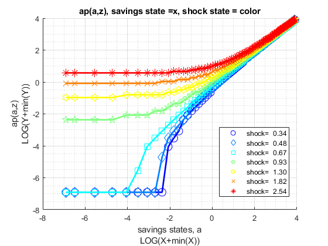
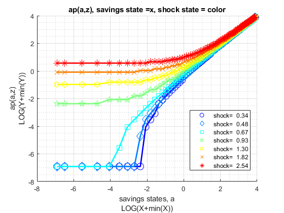
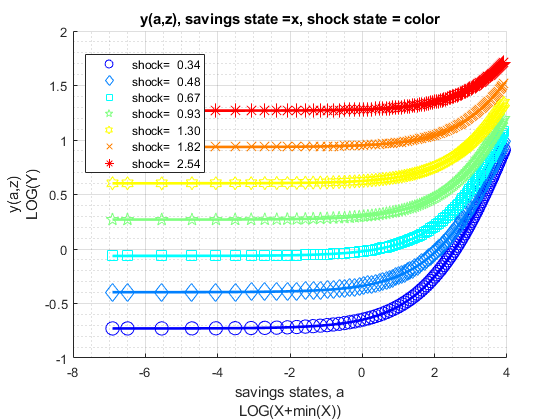
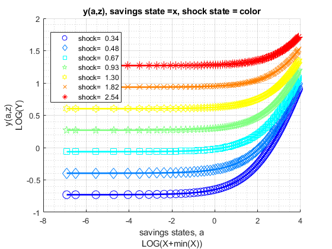

FF_VFI_AZ_LOOP (looped) solves the Savings and Shock Dynamic Programming Problem
Slow looped solution for solving the dynamic programming problem with fixed assets grid using value function iteration. Obtains policy and value functions. Shock is AR(1). This function is looped, and extremely slow when state-space increases in size. This function is useful as a working template for developing models that rely on asset and shocks.
* MP_PARAMS controls model preference, prices, shock and asset grid parameters. * MP_SUPPORT controls convergence criterion, printing and summary controls
mp_params = containers.Map('KeyType','char', 'ValueType','any');
mp_params('fl_crra') = 1.5;
mp_params('fl_beta') = 0.95;
mp_params('fl_w') = 1.05;
mp_params('fl_r') = 0.03;
mp_params('fl_a_min') = 0;
mp_params('fl_a_max') = 50;
mp_params('it_a_n') = 25;
mp_params('st_grid_type') = 'grid_powerspace';
mp_params('fl_z_persist') = 0.60;
mp_params('fl_shk_std') = 0.10;
mp_params('it_z_n') = 5;
mp_params('st_grid_type') = 'grid_powerspace'; mp_support = containers.Map('KeyType','char', 'ValueType','any');
mp_support('fl_lowestc') = -10e10;
mp_support('it_maxiter_val') = 500;
mp_support('fl_tol_val') = 10e-5;
% printer various information
mp_support('bl_timer') = true;
mp_support('bl_print_params') = false;
mp_support('bl_print_iterinfo') = false;
% These names must match keys of mp_solu: v, ap, c, y
% what outcomes to store in the mp_solu for export
mp_support('ls_slout') = {'v', 'ap', 'c', 'y', 'coh'};
% outcome for ff_container_map_display
mp_support('ls_ffcmd') = {'ap'};
% outcome for ff_summ_nd_array
mp_support('ls_ffsna') = {};
% outcome for ff_graph_grid
mp_support('ls_ffgrh') = {};
% outcome for ff_summ_nd_array
mp_support('ffsna_opt_it_row_n_keep') = 10;
% outcome for ff_summ_nd_array
mp_support('ffsna_opt_it_col_n_keep') = 9;[MP_VALPOL_OUT, FLAG] = FF_VFI_AZ_LOOP() default savings and shock model simulation
[MP_VALPOL_OUT, FLAG] = FF_VFI_AZ_LOOP(MP_PARAMS) change model parameters through MP_PARAMS
[MP_VALPOL_OUT, FLAG] = FF_VFI_AZ_LOOP(MP_PARAMS, MP_SUPPORT) change various printing, storaging, graphing, convergence etc controls through MP_SUPPORT
[MP_VALPOL_OUT, FLAG] = FF_VFI_AZ_LOOP(MP_PARAMS, MP_SUPPORT, MP_SUPPORT_GRAPH) also changing graphing options, see the FF_GRAPH_GRID function for what key value paris can be specified.
see also FX_VFI_AZ_LOOP, FF_VFI_AZ_VEC, FF_GRAPH_GRID
Contents
- Set Default and Parse Inputs
- Default Model Parameters
- Parse mp_params
- Generate A and Z Grids
- Default Support Parameters
- Whether Additional Outcomes Should be Stored
- Initialize Matrix
- Iterate and Dynamically Solve
- Convergence Results
- Results for Printing, and Graphing
- Print Parameter Information
- Show Value Function Convergence Information
- ls_ffcmd summary
- ls_ffsna summarize full
- ls_ffgrh graph
- Store Results for Output
function [mp_valpol_out, flag] = ff_vfi_az_loop(varargin)
Set Default and Parse Inputs
if (~isempty(varargin)) if (length(varargin) == 1) [mp_params_ext] = varargin{:}; elseif (length(varargin) == 2) [mp_params_ext, mp_support_ext] = varargin{:}; end else close all; mp_support_ext = containers.Map('KeyType','char', 'ValueType','any'); mp_support_ext('bl_timer') = true; mp_support_ext('bl_print_params') = true; mp_support_ext('bl_print_iterinfo') = true; mp_support_ext('ls_ffcmd') = {'v', 'ap', 'c', 'y', 'coh', 'savefraccoh'}; mp_support_ext('ls_ffsna') = {'ap'}; mp_support_ext('ls_ffgrh') = {'v', 'ap', 'c', 'y', 'savefraccoh'}; mp_support_ext('ls_store') = {'v', 'ap', 'c', 'y', 'coh'}; mp_support_ext('ffsna_opt_it_row_n_keep') = 10; mp_support_ext('ffsna_opt_it_col_n_keep') = 9; end
Default Model Parameters
support_map
mp_params = containers.Map('KeyType','char', 'ValueType','any'); mp_params('fl_crra') = 1.5; mp_params('fl_beta') = 0.94; mp_params('fl_w') = 1.28; mp_params('fl_r') = 0.025; mp_params('fl_a_min') = 0; mp_params('fl_a_max') = 50; mp_params('it_a_n') = 50; mp_params('st_grid_type') = 'grid_linspace'; mp_params('fl_z_persist') = 0.80; mp_params('fl_shk_std') = 0.20; mp_params('it_z_n') = 7; % override default support_map values if (length(varargin)>=1) mp_params = [mp_params; mp_params_ext]; end
Parse mp_params
params_group = values(mp_params, {'fl_crra', 'fl_beta'});
[fl_crra, fl_beta] = params_group{:};
params_group = values(mp_params, {'fl_w', 'fl_r'});
[fl_w, fl_r] = params_group{:};
params_group = values(mp_params, {'fl_a_min', 'fl_a_max', 'it_a_n', 'st_grid_type'});
[fl_a_min, fl_a_max, it_a_n, st_grid_type] = params_group{:};
params_group = values(mp_params, {'fl_z_persist', 'fl_shk_std', 'it_z_n'});
[fl_z_persist, fl_shk_std, it_z_n] = params_group{:};
Generate A and Z Grids
Same min and max and grid points
[ar_a] = ff_saveborr_grid(fl_a_min, fl_a_max, it_a_n, st_grid_type); ar_a = ar_a'; % shock vector and transition, normalize mean exp(shk) to 1 [ar_z, mt_z_trans] = ffy_rouwenhorst(fl_z_persist, fl_shk_std, it_z_n); ar_z = exp(ar_z'); % normalize mean of exp to 1, fl_shk_std does not shift mean. ar_z_stationary = mt_z_trans^1000; ar_z_stationary = ar_z_stationary(1,:); fl_labor_agg = ar_z_stationary*exp(ar_z'); ar_z = exp(ar_z)/fl_labor_agg;
Default Support Parameters
support_map
mp_support = containers.Map('KeyType','char', 'ValueType','any'); % Model Control mp_support('fl_lowestc') = -10e10; % Iteration Control mp_support('it_maxiter_val') = 500; mp_support('fl_tol_val') = 10e-5; % printer various information mp_support('bl_timer') = true; mp_support('bl_print_params') = false; mp_support('bl_print_iterinfo') = false; % These names must match keys of mp_solu: v, ap, c, y % what outcomes to store in the mp_solu for export mp_support('ls_slout') = {'v', 'ap', 'c', 'y', 'coh'}; % outcome for ff_container_map_display mp_support('ls_ffcmd') = {'ap'}; % outcome for ff_summ_nd_array mp_support('ls_ffsna') = {}; % outcome for ff_graph_grid mp_support('ls_ffgrh') = {}; % outcome for ff_summ_nd_array mp_support('ffsna_opt_it_row_n_keep') = 10; % outcome for ff_summ_nd_array mp_support('ffsna_opt_it_col_n_keep') = 9; % override default support_map values if (length(varargin)>=2 || isempty(varargin)) mp_support = [mp_support; mp_support_ext]; end % Parse mp_support params_group = values(mp_support, {'fl_lowestc'}); [fl_lowestc] = params_group{:}; params_group = values(mp_support, {'it_maxiter_val', 'fl_tol_val'}); [it_maxiter_val, fl_tol_val] = params_group{:}; params_group = values(mp_support, {'bl_timer', 'bl_print_params', 'bl_print_iterinfo'}); [bl_timer, bl_print_params, bl_print_iterinfo] = params_group{:}; params_group = values(mp_support, ... {'ls_slout', 'ls_ffcmd', 'ls_ffsna', 'ls_ffgrh',... 'ffsna_opt_it_row_n_keep', 'ffsna_opt_it_col_n_keep'}); [ls_slout, ls_ffcmd, ls_ffsna, ls_ffgrh,... ffsna_opt_it_row_n_keep, ffsna_opt_it_col_n_keep] = params_group{:};
Whether Additional Outcomes Should be Stored
when state space are large, might not be a good idea to store all possible model output matrixes, but could be controlled with these if things should be outputed. If bl_store_more = true, will output store all additional possible outcomes if bl_vfi_store_all = true. Internally, which output becomes tabular or graphical controled by ls_ffcmd, ls_ffsna, and ls_ffgrh.
% If to store additional outcomes cl_more = {'c', 'y'}; ar_find_slout = cell2mat(cellfun(@(m) find(strcmp(ls_slout, m)), cl_more, 'UniformOutput', false)); ar_find_ffcmd = cell2mat(cellfun(@(m) find(strcmp(ls_ffcmd, m)), cl_more, 'UniformOutput', false)); ar_find_ffsna = cell2mat(cellfun(@(m) find(strcmp(ls_ffsna, m)), cl_more, 'UniformOutput', false)); ar_find_ffgrh = cell2mat(cellfun(@(m) find(strcmp(ls_ffgrh, m)), cl_more, 'UniformOutput', false)); if (length(ar_find_slout) + length(ar_find_ffcmd) + length(ar_find_ffsna) + length(ar_find_ffgrh) >1) bl_store_more = true; end
Initialize Matrix
mt_val_lst = zeros(length(ar_a),length(ar_z)); mt_val_cur = mt_val_lst; mt_aprime_lst = zeros(length(ar_a),length(ar_z)); mt_aprime_cur = mt_aprime_lst; mt_aprime_idx = zeros(length(ar_a),length(ar_z)); ar_val_diff_norm = zeros([it_maxiter_val, 1]); ar_pol_diff_norm = zeros([it_maxiter_val, 1]); mt_pol_perc_change = zeros([it_maxiter_val, length(ar_z)]); if (bl_store_more) mt_c = zeros(length(ar_a),length(ar_z)); mt_y = zeros(length(ar_a),length(ar_z)); mt_coh = zeros(length(ar_a),length(ar_z)); end
Iterate and Dynamically Solve
if (bl_timer) tic end % initialize fl_diff = 1; it_iter = 0; % After converge, one more iteration to store results bl_continue = true; bl_converged = false; while bl_continue for it_z_ctr = 1:length(ar_z) fl_z = ar_z(it_z_ctr); for it_a_ctr = 1:length(ar_a) fl_a = ar_a(it_a_ctr); ar_vnew = zeros(size(ar_a)); if(bl_store_more && bl_converged) ar_c = zeros(size(ar_a)); end fl_y = fl_w*fl_z + (fl_r)*fl_a; for it_ap_ctr = 1:length(ar_a) fl_aprime = ar_a(it_ap_ctr); fl_c = fl_y + fl_a - fl_aprime; if fl_c > 0 if (fl_crra == 1) ar_vnew(it_ap_ctr) = log(fl_c); else ar_vnew(it_ap_ctr) = ((fl_c)^(1-fl_crra)-1)/(1-fl_crra); end for y = 1:length(ar_z) ar_vnew(it_ap_ctr) = ar_vnew(it_ap_ctr) + ... fl_beta*mt_z_trans(it_z_ctr,y)*mt_val_lst(it_ap_ctr,y); end else fl_c = fl_lowestc; ar_vnew(it_ap_ctr) = fl_lowestc; end if(bl_store_more && bl_converged) ar_c(it_ap_ctr) = fl_c; end end it_opti_a_idx = find(ar_vnew == max(ar_vnew)); mt_val_cur(it_a_ctr,it_z_ctr) = ar_vnew(it_opti_a_idx(1)); mt_aprime_cur(it_a_ctr,it_z_ctr) = ar_a(it_opti_a_idx(1)); % Save Additional Results if bl_converged mt_aprime_idx(it_a_ctr,it_z_ctr) = it_opti_a_idx(1); if (bl_store_more) mt_c(it_a_ctr,it_z_ctr) = ar_c(it_opti_a_idx(1)); mt_y(it_a_ctr,it_z_ctr) = fl_y; mt_coh(:,it_z_ctr) = fl_y + fl_a; end end end end % Continuation Conditions: it_iter = it_iter + 1; fl_diff = norm(mt_val_cur-mt_val_lst); diff_pol = norm(mt_aprime_cur-mt_aprime_lst); % Difference across iterations if (bl_print_iterinfo) ar_val_diff_norm(it_iter) = fl_diff; ar_pol_diff_norm(it_iter) = diff_pol; mt_pol_perc_change(it_iter, :) = sum((mt_aprime_cur ~= mt_aprime_lst))/(length(ar_a)); end % Update mt_val_lst = mt_val_cur; mt_aprime_lst = mt_aprime_cur; % Update Continue Criterion if bl_converged bl_continue = false; elseif(fl_diff <= fl_tol_val || it_iter >= it_maxiter_val) bl_converged = true; end end
Convergence Results
it_iter_last = it_iter; if fl_diff <= fl_tol_val && it_iter<=it_maxiter_val mt_val = mt_val_cur; mt_aprime = mt_aprime_cur; flag = 1; else mt_val = zeros(size(mt_val_lst)); mt_aprime = zeros(size(mt_val_lst)); flag = 0; end if (bl_timer) toc end
Elapsed time is 0.452214 seconds.
Results for Printing, and Graphing
mp_print_graph = containers.Map('KeyType','char', 'ValueType','any'); mp_print_graph('v') = mt_val_cur; mp_print_graph('ap') = mt_aprime; if (bl_store_more) mp_print_graph('c') = mt_c; mp_print_graph('y') = mt_y; mp_print_graph('coh') = mt_coh; mp_print_graph('savefraccoh') = mt_aprime./mt_coh; end
Print Parameter Information
if (bl_print_params) ff_container_map_display(mp_params); ff_container_map_display(mp_support); end
----------------------------------------
xxxxxxxxxxxxxxxxxxxxxxxxxxxxxxxxxxxxxxxx
CONTAINER NAME: mp_params Scalars
xxxxxxxxxxxxxxxxxxxxxxxxxxxxxxxxxxxxxxxx
i idx value
__ ___ _____
fl_a_max 1 1 50
fl_a_min 2 2 0
fl_beta 3 3 0.94
fl_crra 4 4 1.5
fl_r 5 5 0.025
fl_shk_std 6 6 0.2
fl_w 7 7 1.28
fl_z_persist 8 8 0.8
it_a_n 9 9 50
it_z_n 10 10 7
----------------------------------------
xxxxxxxxxxxxxxxxxxxxxxxxxxxxxxxxxxxxxxxx
CONTAINER NAME: mp_params String
xxxxxxxxxxxxxxxxxxxxxxxxxxxxxxxxxxxxxxxx
i idx string
___ ____ _______________
st_grid_type "1" "11" "grid_linspace"
pos = 11 ; key = ls_ffsna
'ap'
----------------------------------------
xxxxxxxxxxxxxxxxxxxxxxxxxxxxxxxxxxxxxxxx
CONTAINER NAME: mp_support Scalars
xxxxxxxxxxxxxxxxxxxxxxxxxxxxxxxxxxxxxxxx
i idx value
_ ___ ______
bl_print_iterinfo 1 1 1
bl_print_params 2 2 1
bl_timer 3 3 1
ffsna_opt_it_col_n_keep 4 4 9
ffsna_opt_it_row_n_keep 5 5 10
fl_lowestc 6 6 -1e+11
fl_tol_val 7 7 0.0001
it_maxiter_val 8 8 500
----------------------------------------
xxxxxxxxxxxxxxxxxxxxxxxxxxxxxxxxxxxxxxxx
CONTAINER NAME: mp_support String
xxxxxxxxxxxxxxxxxxxxxxxxxxxxxxxxxxxxxxxx
i idx string
___ ____ __________________________
ls_ffcmd "1" "9" "v;ap;c;y;coh;savefraccoh"
ls_ffgrh "2" "10" "v;ap;c;y;savefraccoh"
ls_slout "3" "12" "v;ap;c;y;coh"
ls_store "4" "13" "v;ap;c;y;coh"
Show Value Function Convergence Information
if (bl_print_iterinfo) it_z_select = unique(round(linspace(1,length(ar_z), 7))); ar_z_select = ar_z(it_z_select); tb_valpol_alliter = array2table([ar_val_diff_norm(1:it_iter_last)';... ar_pol_diff_norm(1:it_iter_last)';... mt_pol_perc_change(1:it_iter_last,it_z_select)']'); ar_st_col_zs = matlab.lang.makeValidName(strcat('z=', string(ar_z_select))); cl_col_names = ['valgap', 'polgap', ar_st_col_zs]; cl_row_names = strcat('iter=', string(1:it_iter_last)); tb_valpol_alliter.Properties.VariableNames = cl_col_names; tb_valpol_alliter.Properties.RowNames = cl_row_names; disp('xxxxxxxxxxxxxxxxxxxxxxxxxxxxxxxxxxxxxxxx'); disp('Value Function Iteration Per Iteration Changes'); disp('xxxxxxxxxxxxxxxxxxxxxxxxxxxxxxxxxxxxxxxx'); disp('valgap = norm(mt_val - mt_val_cur): value function difference across iterations'); disp('polgap = norm(mt_pol_a - mt_pol_a_cur): policy function difference across iterations'); disp(['z1 = z1 perc change: sum((mt_pol_a ~= mt_pol_a_cur))/(it_a_n): percentage of state space'... ' points conditional on shock where the policy function is changing across iterations']); disp(tb_valpol_alliter); end
xxxxxxxxxxxxxxxxxxxxxxxxxxxxxxxxxxxxxxxx
Value Function Iteration Per Iteration Changes
xxxxxxxxxxxxxxxxxxxxxxxxxxxxxxxxxxxxxxxx
valgap = norm(mt_val - mt_val_cur): value function difference across iterations
polgap = norm(mt_pol_a - mt_pol_a_cur): policy function difference across iterations
z1 = z1 perc change: sum((mt_pol_a ~= mt_pol_a_cur))/(it_a_n): percentage of state space points conditional on shock where the policy function is changing across iterations
valgap polgap z_0_50352 z_0_57817 z_0_69323 z_0_87975 z_1_2028 z_1_8136 z_3_1094
__________ ______ _________ _________ _________ _________ ________ ________ ________
iter=1 28.818 0 0 0 0 0 0 0 0
iter=2 21.924 269.74 0.96 0.96 0.96 0.96 0.98 0.98 1
iter=3 18.007 91.229 0.92 0.92 0.92 0.92 0.94 0.94 0.96
iter=4 15.183 45.883 0.86 0.86 0.86 0.86 0.88 0.88 0.92
iter=5 12.995 27.75 0.78 0.78 0.78 0.8 0.78 0.8 0.82
iter=6 11.236 18.723 0.68 0.68 0.68 0.68 0.7 0.7 0.72
iter=7 9.7867 13.733 0.56 0.56 0.56 0.56 0.54 0.58 0.64
iter=8 8.5734 10.763 0.42 0.42 0.42 0.42 0.44 0.44 0.5
iter=9 7.5432 9.3106 0.32 0.32 0.32 0.32 0.32 0.34 0.4
iter=10 6.6617 8.9011 0.28 0.28 0.28 0.28 0.26 0.3 0.38
iter=11 5.9023 7.3811 0.2 0.2 0.2 0.2 0.2 0.2 0.26
iter=12 5.2417 7.3511 0.2 0.2 0.2 0.2 0.16 0.2 0.24
iter=13 4.6617 6.056 0.14 0.14 0.14 0.14 0.16 0.16 0.18
iter=14 4.159 5.3636 0.1 0.12 0.12 0.14 0.12 0.12 0.16
iter=15 3.7132 5.0623 0.1 0.1 0.12 0.12 0.12 0.12 0.14
iter=16 3.3181 4.2184 0.08 0.08 0.1 0.12 0.1 0.1 0.14
iter=17 2.9702 3.853 0.08 0.1 0.1 0.08 0.06 0.1 0.12
iter=18 2.6632 2.5541 0.06 0.06 0.04 0.06 0.06 0.06 0.06
iter=19 2.3884 2.1276 0.04 0.02 0.04 0.06 0.06 0.06 0.08
iter=20 2.1425 2.0098 0.02 0.04 0.04 0.06 0.06 0.04 0.06
iter=21 1.9231 1.7674 0.02 0.02 0.04 0.04 0.06 0.04 0.06
iter=22 1.7287 2.1794 0.04 0.02 0.04 0.04 0.04 0.06 0.06
iter=23 1.5569 1.7674 0.02 0.04 0.02 0.06 0.04 0.02 0.06
iter=24 1.4036 1.7674 0.02 0.02 0.02 0.04 0.04 0.04 0.06
iter=25 1.2663 1.6511 0.02 0.02 0.04 0.04 0.02 0.02 0.02
iter=26 1.1431 1.4431 0.02 0.02 0.02 0.02 0.02 0.02 0.04
iter=27 1.032 1.4431 0.02 0.02 0 0.04 0.02 0.04 0.02
iter=28 0.93183 1.4431 0 0.02 0.04 0.02 0.02 0.02 0.02
iter=29 0.84143 1.4431 0.02 0.02 0.02 0 0 0.04 0.02
iter=30 0.75996 1.4431 0.04 0.02 0.02 0.02 0.02 0.02 0
iter=31 0.6866 1.0204 0.02 0.02 0.02 0 0.02 0.02 0.02
iter=32 0.62081 1.0204 0.02 0.02 0.02 0 0 0 0.02
iter=33 0.56207 1.4431 0 0.02 0 0 0.02 0 0.02
iter=34 0.50998 1.0204 0.02 0 0 0 0 0.02 0
iter=35 0.46382 1.4431 0.02 0.02 0 0.02 0.02 0 0.02
iter=36 0.42296 0 0 0 0 0 0 0 0
iter=37 0.38673 1.4431 0.02 0 0.02 0 0 0 0.04
iter=38 0.35456 0 0 0 0 0 0 0 0
iter=39 0.32582 1.0204 0 0 0 0 0.02 0 0
iter=40 0.30004 1.0204 0 0 0 0 0 0 0.02
iter=41 0.27689 0 0 0 0 0 0 0 0
iter=42 0.25599 0 0 0 0 0 0 0 0
iter=43 0.23702 0 0 0 0 0 0 0 0
iter=44 0.21977 0 0 0 0 0 0 0 0
iter=45 0.20406 1.0204 0 0 0 0 0 0 0.02
iter=46 0.1897 1.0204 0 0 0 0 0.02 0.02 0
iter=47 0.17654 0 0 0 0 0 0 0 0
iter=48 0.16446 0 0 0 0 0 0 0 0
iter=49 0.15335 0 0 0 0 0 0 0 0
iter=50 0.1431 0 0 0 0 0 0 0 0
iter=51 0.13364 0 0 0 0 0 0 0 0
iter=52 0.12488 0 0 0 0 0 0 0 0
iter=53 0.11676 0 0 0 0 0 0 0 0
iter=54 0.10923 0 0 0 0 0 0 0 0
iter=55 0.10223 0 0 0 0 0 0 0 0
iter=56 0.095721 0 0 0 0 0 0 0 0
iter=57 0.089663 0 0 0 0 0 0 0 0
iter=58 0.084017 0 0 0 0 0 0 0 0
iter=59 0.078753 0 0 0 0 0 0 0 0
iter=60 0.073839 0 0 0 0 0 0 0 0
iter=61 0.069249 0 0 0 0 0 0 0 0
iter=62 0.064959 0 0 0 0 0 0 0 0
iter=63 0.060948 0 0 0 0 0 0 0 0
iter=64 0.057195 0 0 0 0 0 0 0 0
iter=65 0.053682 0 0 0 0 0 0 0 0
iter=66 0.050392 0 0 0 0 0 0 0 0
iter=67 0.04731 0 0 0 0 0 0 0 0
iter=68 0.044422 0 0 0 0 0 0 0 0
iter=69 0.041715 0 0 0 0 0 0 0 0
iter=70 0.039176 0 0 0 0 0 0 0 0
iter=71 0.036796 0 0 0 0 0 0 0 0
iter=72 0.034563 0 0 0 0 0 0 0 0
iter=73 0.032467 0 0 0 0 0 0 0 0
iter=74 0.030501 0 0 0 0 0 0 0 0
iter=75 0.028655 0 0 0 0 0 0 0 0
iter=76 0.026923 0 0 0 0 0 0 0 0
iter=77 0.025296 0 0 0 0 0 0 0 0
iter=78 0.023769 0 0 0 0 0 0 0 0
iter=79 0.022335 0 0 0 0 0 0 0 0
iter=80 0.020988 0 0 0 0 0 0 0 0
iter=81 0.019723 0 0 0 0 0 0 0 0
iter=82 0.018535 0 0 0 0 0 0 0 0
iter=83 0.017418 0 0 0 0 0 0 0 0
iter=84 0.01637 0 0 0 0 0 0 0 0
iter=85 0.015384 0 0 0 0 0 0 0 0
iter=86 0.014459 0 0 0 0 0 0 0 0
iter=87 0.013589 0 0 0 0 0 0 0 0
iter=88 0.012772 0 0 0 0 0 0 0 0
iter=89 0.012004 0 0 0 0 0 0 0 0
iter=90 0.011282 0 0 0 0 0 0 0 0
iter=91 0.010604 0 0 0 0 0 0 0 0
iter=92 0.0099671 0 0 0 0 0 0 0 0
iter=93 0.0093682 0 0 0 0 0 0 0 0
iter=94 0.0088054 0 0 0 0 0 0 0 0
iter=95 0.0082765 0 0 0 0 0 0 0 0
iter=96 0.0077794 0 0 0 0 0 0 0 0
iter=97 0.0073122 0 0 0 0 0 0 0 0
iter=98 0.0068731 0 0 0 0 0 0 0 0
iter=99 0.0064604 0 0 0 0 0 0 0 0
iter=100 0.0060725 0 0 0 0 0 0 0 0
iter=101 0.0057079 0 0 0 0 0 0 0 0
iter=102 0.0053652 0 0 0 0 0 0 0 0
iter=103 0.0050432 0 0 0 0 0 0 0 0
iter=104 0.0047404 0 0 0 0 0 0 0 0
iter=105 0.0044559 0 0 0 0 0 0 0 0
iter=106 0.0041884 0 0 0 0 0 0 0 0
iter=107 0.003937 0 0 0 0 0 0 0 0
iter=108 0.0037007 0 0 0 0 0 0 0 0
iter=109 0.0034786 0 0 0 0 0 0 0 0
iter=110 0.0032699 0 0 0 0 0 0 0 0
iter=111 0.0030736 0 0 0 0 0 0 0 0
iter=112 0.0028892 0 0 0 0 0 0 0 0
iter=113 0.0027158 0 0 0 0 0 0 0 0
iter=114 0.0025528 0 0 0 0 0 0 0 0
iter=115 0.0023996 0 0 0 0 0 0 0 0
iter=116 0.0022556 0 0 0 0 0 0 0 0
iter=117 0.0021203 0 0 0 0 0 0 0 0
iter=118 0.001993 0 0 0 0 0 0 0 0
iter=119 0.0018734 0 0 0 0 0 0 0 0
iter=120 0.001761 0 0 0 0 0 0 0 0
iter=121 0.0016553 0 0 0 0 0 0 0 0
iter=122 0.001556 0 0 0 0 0 0 0 0
iter=123 0.0014627 0 0 0 0 0 0 0 0
iter=124 0.0013749 0 0 0 0 0 0 0 0
iter=125 0.0012924 0 0 0 0 0 0 0 0
iter=126 0.0012148 0 0 0 0 0 0 0 0
iter=127 0.0011419 0 0 0 0 0 0 0 0
iter=128 0.0010734 0 0 0 0 0 0 0 0
iter=129 0.001009 0 0 0 0 0 0 0 0
iter=130 0.00094848 0 0 0 0 0 0 0 0
iter=131 0.00089157 0 0 0 0 0 0 0 0
iter=132 0.00083807 0 0 0 0 0 0 0 0
iter=133 0.00078778 0 0 0 0 0 0 0 0
iter=134 0.00074052 0 0 0 0 0 0 0 0
iter=135 0.00069608 0 0 0 0 0 0 0 0
iter=136 0.00065432 0 0 0 0 0 0 0 0
iter=137 0.00061506 0 0 0 0 0 0 0 0
iter=138 0.00057815 0 0 0 0 0 0 0 0
iter=139 0.00054346 0 0 0 0 0 0 0 0
iter=140 0.00051086 0 0 0 0 0 0 0 0
iter=141 0.0004802 0 0 0 0 0 0 0 0
iter=142 0.00045139 0 0 0 0 0 0 0 0
iter=143 0.00042431 0 0 0 0 0 0 0 0
iter=144 0.00039885 0 0 0 0 0 0 0 0
iter=145 0.00037492 0 0 0 0 0 0 0 0
iter=146 0.00035242 0 0 0 0 0 0 0 0
iter=147 0.00033128 0 0 0 0 0 0 0 0
iter=148 0.0003114 0 0 0 0 0 0 0 0
iter=149 0.00029272 0 0 0 0 0 0 0 0
iter=150 0.00027515 0 0 0 0 0 0 0 0
iter=151 0.00025864 0 0 0 0 0 0 0 0
iter=152 0.00024313 0 0 0 0 0 0 0 0
iter=153 0.00022854 0 0 0 0 0 0 0 0
iter=154 0.00021483 0 0 0 0 0 0 0 0
iter=155 0.00020194 0 0 0 0 0 0 0 0
iter=156 0.00018982 0 0 0 0 0 0 0 0
iter=157 0.00017843 0 0 0 0 0 0 0 0
iter=158 0.00016772 0 0 0 0 0 0 0 0
iter=159 0.00015766 0 0 0 0 0 0 0 0
iter=160 0.0001482 0 0 0 0 0 0 0 0
iter=161 0.00013931 0 0 0 0 0 0 0 0
iter=162 0.00013095 0 0 0 0 0 0 0 0
iter=163 0.00012309 0 0 0 0 0 0 0 0
iter=164 0.00011571 0 0 0 0 0 0 0 0
iter=165 0.00010877 0 0 0 0 0 0 0 0
iter=166 0.00010224 0 0 0 0 0 0 0 0
iter=167 9.6105e-05 0 0 0 0 0 0 0 0
iter=168 9.0339e-05 0 0 0 0 0 0 0 0
ls_ffcmd summary
if (~isempty(ls_ffcmd)) mp_ffcmd = containers.Map(ls_ffcmd, values(mp_print_graph, ls_ffcmd)); ff_container_map_display(mp_ffcmd, ffsna_opt_it_row_n_keep, ffsna_opt_it_col_n_keep); end
----------------------------------------
xxxxxxxxxxxxxxxxxxxxxxxxxxxxxxxxxxxxxxxx
CONTAINER NAME: mp_ffcmd ND Array (Matrix etc)
xxxxxxxxxxxxxxxxxxxxxxxxxxxxxxxxxxxxxxxx
i idx ndim numel rowN colN sum mean std coefvari min max
_ ___ ____ _____ ____ ____ ______ _______ _______ ________ ________ _______
ap 1 1 2 350 50 7 8427.6 24.079 14.27 0.59263 0 50
c 2 2 2 350 50 7 1103.2 3.1519 0.95101 0.30173 0.6445 5.2301
coh 3 3 2 350 50 7 18499 52.856 1.1083 0.020968 51.895 55.23
savefraccoh 4 4 2 350 50 7 159.39 0.45541 0.26973 0.59229 0 0.92417
v 5 5 2 350 50 7 3517.1 10.049 3.3682 0.33518 -0.36953 15.048
y 6 6 2 350 50 7 780.71 2.2306 1.168 0.52363 0.6445 5.2301
xxx TABLE:ap xxxxxxxxxxxxxxxxxx
c1 c2 c3 c4 c5 c6 c7
______ ______ ______ ______ ______ ______ ______
r1 0 0 0 0 0 0 2.0408
r2 0 0 0 1.0204 1.0204 1.0204 3.0612
r3 1.0204 1.0204 1.0204 2.0408 2.0408 2.0408 4.0816
r4 2.0408 2.0408 2.0408 2.0408 3.0612 3.0612 5.102
r5 3.0612 3.0612 3.0612 3.0612 4.0816 4.0816 6.1224
r46 43.878 43.878 43.878 43.878 43.878 44.898 45.918
r47 44.898 44.898 44.898 44.898 44.898 45.918 46.939
r48 45.918 45.918 45.918 45.918 45.918 46.939 47.959
r49 46.939 46.939 46.939 46.939 46.939 47.959 48.98
r50 47.959 47.959 47.959 47.959 47.959 48.98 50
xxx TABLE:c xxxxxxxxxxxxxxxxxx
c1 c2 c3 c4 c5 c6 c7
______ _______ _______ ______ ______ ______ ______
r1 0.6445 0.74006 0.88734 1.1261 1.5396 2.3215 1.9393
r2 1.6904 1.786 1.9333 1.1516 1.5651 2.347 1.9648
r3 1.7159 1.8115 1.9588 1.1771 1.5907 2.3725 1.9903
r4 1.7414 1.837 1.9843 2.223 1.6162 2.398 2.0158
r5 1.7669 1.8625 2.0098 2.2485 1.6417 2.4235 2.0413
r46 3.8333 3.9288 4.0761 4.3149 4.7284 4.4898 5.128
r47 3.8588 3.9543 4.1016 4.3404 4.7539 4.5153 5.1536
r48 3.8843 3.9799 4.1271 4.3659 4.7794 4.5409 5.1791
r49 3.9098 4.0054 4.1526 4.3914 4.8049 4.5664 5.2046
r50 3.9353 4.0309 4.1782 4.4169 4.8305 4.5919 5.2301
xxx TABLE:coh xxxxxxxxxxxxxxxxxx
c1 c2 c3 c4 c5 c6 c7
______ _____ ______ ______ _____ ______ _____
r1 51.895 51.99 52.137 52.376 52.79 53.571 55.23
r2 51.895 51.99 52.137 52.376 52.79 53.571 55.23
r3 51.895 51.99 52.137 52.376 52.79 53.571 55.23
r4 51.895 51.99 52.137 52.376 52.79 53.571 55.23
r5 51.895 51.99 52.137 52.376 52.79 53.571 55.23
r46 51.895 51.99 52.137 52.376 52.79 53.571 55.23
r47 51.895 51.99 52.137 52.376 52.79 53.571 55.23
r48 51.895 51.99 52.137 52.376 52.79 53.571 55.23
r49 51.895 51.99 52.137 52.376 52.79 53.571 55.23
r50 51.895 51.99 52.137 52.376 52.79 53.571 55.23
xxx TABLE:savefraccoh xxxxxxxxxxxxxxxxxx
c1 c2 c3 c4 c5 c6 c7
________ ________ ________ ________ ________ ________ ________
r1 0 0 0 0 0 0 0.036951
r2 0 0 0 0.019482 0.01933 0.019048 0.055427
r3 0.019663 0.019627 0.019572 0.038965 0.038659 0.038095 0.073902
r4 0.039326 0.039254 0.039143 0.038965 0.057989 0.057143 0.092378
r5 0.058989 0.058881 0.058715 0.058447 0.077319 0.07619 0.11085
r46 0.84551 0.84396 0.84158 0.83774 0.83118 0.83809 0.8314
r47 0.86518 0.86359 0.86115 0.85722 0.85051 0.85714 0.84988
r48 0.88484 0.88321 0.88072 0.8767 0.86984 0.87619 0.86835
r49 0.9045 0.90284 0.90029 0.89619 0.88917 0.89524 0.88683
r50 0.92417 0.92247 0.91986 0.91567 0.9085 0.91429 0.9053
xxx TABLE:v xxxxxxxxxxxxxxxxxx
c1 c2 c3 c4 c5 c6 c7
________ _______ ______ ______ ______ ______ ______
r1 -0.36953 0.43948 1.3389 2.332 3.4198 4.6167 6.3632
r2 0.58346 1.2678 2.0237 2.8933 3.9146 5.0584 6.7138
r3 1.4185 2.004 2.6585 3.4159 4.377 5.4726 7.0503
r4 2.1585 2.6676 3.2442 3.9179 4.8189 5.8689 7.3721
r5 2.8217 3.2719 3.7884 4.4026 5.2434 6.2498 7.6801
r46 13.299 13.4 13.525 13.682 13.888 14.192 14.65
r47 13.424 13.524 13.646 13.8 14.003 14.302 14.752
r48 13.547 13.645 13.765 13.917 14.117 14.409 14.853
r49 13.667 13.763 13.881 14.031 14.228 14.515 14.951
r50 13.784 13.879 13.996 14.143 14.337 14.618 15.048
xxx TABLE:y xxxxxxxxxxxxxxxxxx
c1 c2 c3 c4 c5 c6 c7
_______ _______ _______ ______ ______ ______ ______
r1 0.6445 0.74006 0.88734 1.1261 1.5396 2.3215 3.9801
r2 0.67001 0.76557 0.91285 1.1516 1.5651 2.347 4.0056
r3 0.69552 0.79108 0.93836 1.1771 1.5907 2.3725 4.0311
r4 0.72103 0.81659 0.96387 1.2026 1.6162 2.398 4.0566
r5 0.74654 0.8421 0.98938 1.2281 1.6417 2.4235 4.0821
r46 1.7925 1.888 2.0353 2.274 2.6876 3.4694 5.128
r47 1.818 1.9135 2.0608 2.2996 2.7131 3.4949 5.1536
r48 1.8435 1.939 2.0863 2.3251 2.7386 3.5204 5.1791
r49 1.869 1.9645 2.1118 2.3506 2.7641 3.546 5.2046
r50 1.8945 1.9901 2.1373 2.3761 2.7896 3.5715 5.2301
ls_ffsna summarize full
if (~isempty(ls_ffsna)) % container map subseting mp_ffsna = containers.Map(ls_ffsna, values(mp_print_graph, ls_ffsna)); % ff_summ_nd_array parameters it_aggd = 0; bl_row = 1; ar_permute = [2,1]; ar_st_stats = ["mean"]; bl_print_table = true; cl_mp_datasetdesc = {}; cl_mp_datasetdesc{1} = containers.Map({'name', 'labval'}, {'a', ar_a}); cl_mp_datasetdesc{2} = containers.Map({'name', 'labval'}, {'z', ar_z}); % summarize param_map_keys = keys(mp_ffsna); param_map_vals = values(mp_ffsna); for i = 1:length(mp_ffsna) st_mt_name = param_map_keys{i}; mt_cur = param_map_vals{i}; st_title = ['ff_vfi_az_vec, outcome=' st_mt_name]; ff_summ_nd_array(st_title, mt_cur, ... bl_print_table, ar_st_stats, it_aggd, bl_row, ... cl_mp_datasetdesc, ar_permute); end end
xxx ff_vfi_az_vec, outcome=ap xxxxxxxxxxxxxxxxxxxxxxxxxxx
group a mean_z_0_50352 mean_z_0_57817 mean_z_0_69323 mean_z_0_87975 mean_z_1_2028 mean_z_1_8136 mean_z_3_1094
_____ ______ ______________ ______________ ______________ ______________ _____________ _____________ _____________
1 0 0 0 0 0 0 0 2.0408
2 1.0204 0 0 0 1.0204 1.0204 1.0204 3.0612
3 2.0408 1.0204 1.0204 1.0204 2.0408 2.0408 2.0408 4.0816
4 3.0612 2.0408 2.0408 2.0408 2.0408 3.0612 3.0612 5.102
5 4.0816 3.0612 3.0612 3.0612 3.0612 4.0816 4.0816 6.1224
6 5.102 4.0816 4.0816 4.0816 4.0816 5.102 5.102 7.1429
7 6.1224 5.102 5.102 5.102 5.102 6.1224 6.1224 8.1633
8 7.1429 6.1224 6.1224 6.1224 6.1224 7.1429 7.1429 9.1837
9 8.1633 7.1429 7.1429 7.1429 7.1429 8.1633 8.1633 10.204
10 9.1837 8.1633 8.1633 8.1633 8.1633 9.1837 9.1837 11.224
11 10.204 9.1837 9.1837 9.1837 9.1837 10.204 10.204 12.245
12 11.224 10.204 10.204 10.204 10.204 10.204 11.224 13.265
13 12.245 11.224 11.224 11.224 11.224 11.224 12.245 13.265
14 13.265 12.245 12.245 12.245 12.245 12.245 13.265 14.286
15 14.286 13.265 13.265 13.265 13.265 13.265 14.286 15.306
16 15.306 14.286 14.286 14.286 14.286 14.286 15.306 16.327
17 16.327 15.306 15.306 15.306 15.306 15.306 16.327 17.347
18 17.347 16.327 16.327 16.327 16.327 16.327 17.347 18.367
19 18.367 17.347 17.347 17.347 17.347 17.347 18.367 19.388
20 19.388 18.367 18.367 18.367 18.367 18.367 19.388 20.408
21 20.408 19.388 19.388 19.388 19.388 19.388 20.408 21.429
22 21.429 19.388 20.408 20.408 20.408 20.408 21.429 22.449
23 22.449 20.408 20.408 21.429 21.429 21.429 22.449 23.469
24 23.469 21.429 21.429 22.449 22.449 22.449 23.469 24.49
25 24.49 22.449 22.449 23.469 23.469 23.469 24.49 25.51
26 25.51 23.469 23.469 23.469 24.49 24.49 25.51 26.531
27 26.531 24.49 24.49 24.49 25.51 25.51 26.531 27.551
28 27.551 25.51 25.51 25.51 26.531 26.531 26.531 28.571
29 28.571 26.531 26.531 26.531 27.551 27.551 27.551 29.592
30 29.592 27.551 27.551 27.551 27.551 28.571 28.571 30.612
31 30.612 28.571 28.571 28.571 28.571 29.592 29.592 31.633
32 31.633 29.592 29.592 29.592 29.592 30.612 30.612 32.653
33 32.653 30.612 30.612 30.612 30.612 31.633 31.633 33.673
34 33.673 31.633 31.633 31.633 31.633 32.653 32.653 34.694
35 34.694 32.653 32.653 32.653 32.653 33.673 33.673 35.714
36 35.714 33.673 33.673 33.673 33.673 34.694 34.694 36.735
37 36.735 34.694 34.694 34.694 34.694 35.714 35.714 37.755
38 37.755 35.714 35.714 35.714 35.714 36.735 36.735 38.776
39 38.776 36.735 36.735 36.735 36.735 37.755 37.755 39.796
40 39.796 37.755 37.755 37.755 37.755 38.776 38.776 40.816
41 40.816 38.776 38.776 38.776 38.776 38.776 39.796 41.837
42 41.837 39.796 39.796 39.796 39.796 39.796 40.816 41.837
43 42.857 40.816 40.816 40.816 40.816 40.816 41.837 42.857
44 43.878 41.837 41.837 41.837 41.837 41.837 42.857 43.878
45 44.898 42.857 42.857 42.857 42.857 42.857 43.878 44.898
46 45.918 43.878 43.878 43.878 43.878 43.878 44.898 45.918
47 46.939 44.898 44.898 44.898 44.898 44.898 45.918 46.939
48 47.959 45.918 45.918 45.918 45.918 45.918 46.939 47.959
49 48.98 46.939 46.939 46.939 46.939 46.939 47.959 48.98
50 50 47.959 47.959 47.959 47.959 47.959 48.98 50
ls_ffgrh graph
if (~isempty(ls_ffgrh)) % container map subseting mp_ffgrh = containers.Map(ls_ffgrh, values(mp_print_graph, ls_ffgrh)); % container map settings mp_support_graph = containers.Map('KeyType', 'char', 'ValueType', 'any'); mp_support_graph('cl_st_xtitle') = {'savings states, a'}; mp_support_graph('st_legend_loc') = 'best'; mp_support_graph('bl_graph_logy') = true; % do not log mp_support_graph('st_rowvar_name') = 'shock='; mp_support_graph('it_legend_select') = 5; % how many shock legends to show mp_support_graph('st_rounding') = '6.2f'; % format shock legend mp_support_graph('cl_colors') = 'jet'; % any predefined matlab colormap % Overide graph options here with external parameters if (length(varargin)>=3) mp_support_graph = [mp_support_graph; mp_support_graph_ext]; end % summarize param_map_keys = keys(mp_ffgrh); param_map_vals = values(mp_ffgrh); for i = 1:length(mp_ffgrh) % Get matrix and key st_mt_name = param_map_keys{i}; mt_cur = param_map_vals{i}; % Update Title and Y label mp_support_graph('cl_st_graph_title') = {[st_mt_name '(a,z), savings state =x, shock state = color']}; mp_support_graph('cl_st_ytitle') = {[st_mt_name '(a,z)']}; % Call function ff_graph_grid(mt_cur', ar_z, ar_a, mp_support_graph); end end
 
 


 
 
Store Results for Output
mp_valpol_out = containers.Map(ls_slout, values(mp_print_graph, ls_slout));
end